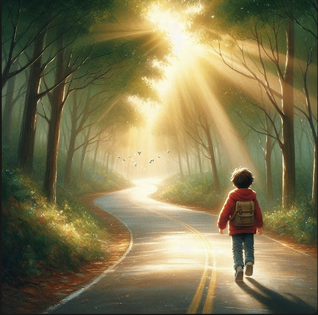

You wandered off on your own one day as your family was out on a hike on an island.
After a while, you lost your way. There are two paths in front of you. Choose your path:
You chose path 1.
Following the right path, you encounter a pack of wolves blocking your way. Do you:
You found an alternate route and safely bypassed the pack of wolves.
As you stumbled out of the forest, you came across a beach. There is an unmanned boat in the water. Do you:
As you sail off from the beach, a storm suddenly approaches. Do you:
You chose to brace for the storm.
The storm passes, and you emerge unscathed.
You chose to return to shore.
Since sailing around the island is too dangerous, you decided to run around the island on the beach.
As you continued your journey, you stumble upon a hidden cave. Do you:
Entering the cave, you discover a treasure chest filled with gold coins. Congratulations, you've found some hidden treasure! You can't wait to go back to your parents to let them know.

You found your way back on the main road, found your parents and told them everything! The end of the story.